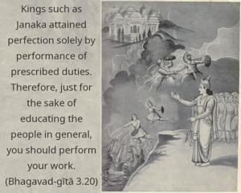
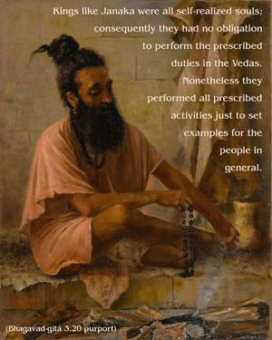
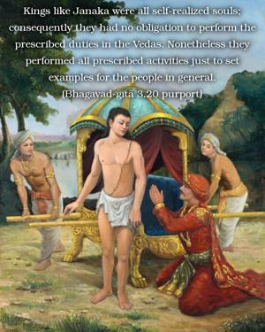
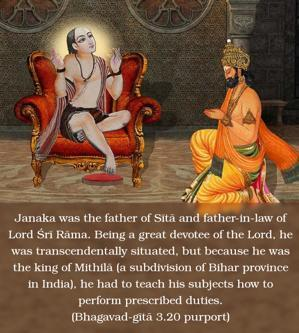
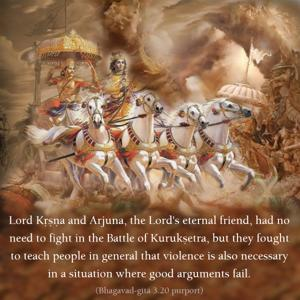
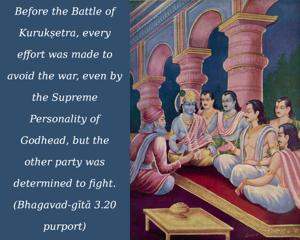

Kings such as Janaka attained perfection solely by performance of prescribed duties. Therefore, just for the sake of educating the people in general, you should perform your work.






Kings like Janaka were all self-realized souls; consequently they had no obligation to perform the prescribed duties in the Vedas. Nonetheless they performed all prescribed activities just to set examples for the people in general. Janaka was the father of Sītā and father-in-law of Lord Śrī Rāma. Being a great devotee of the Lord, he was transcendentally situated, but because he was the king of Mithilā (a subdivision of Bihar province in India), he had to teach his subjects how to perform prescribed duties. Lord Kṛṣṇa and Arjuna, the Lord’s eternal friend, had no need to fight in the Battle of Kurukṣetra, but they fought to teach people in general that violence is also necessary in a situation where good arguments fail. Before the Battle of Kurukṣetra, every effort was made to avoid the war, even by the Supreme Personality of Godhead, but the other party was determined to fight. So for such a right cause, there is a necessity for fighting. Although one who is situated in Kṛṣṇa consciousness may not have any interest in the world, he still works to teach the public how to live and how to act. Experienced persons in Kṛṣṇa consciousness can act in such a way that others will follow, and this is explained in the following verse.